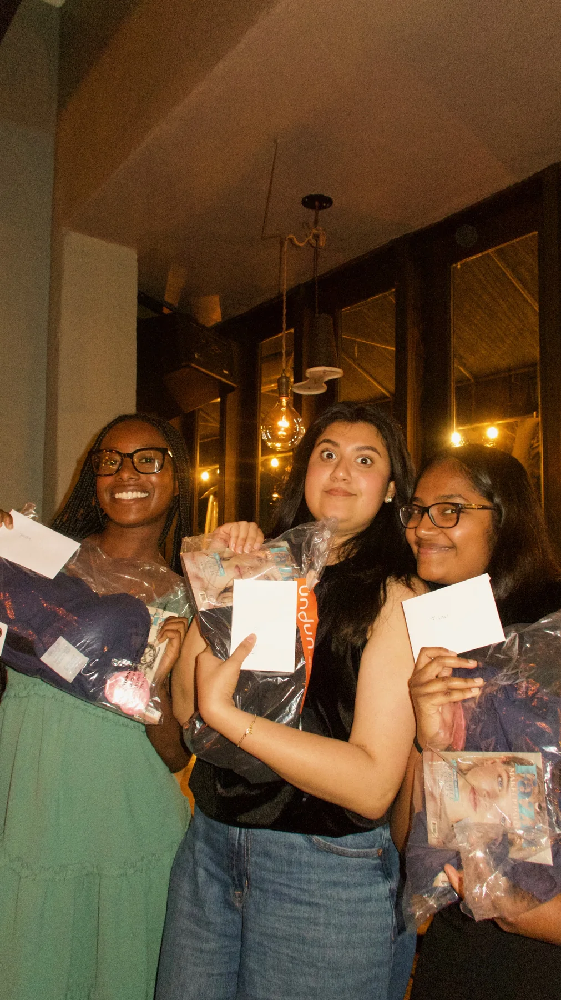
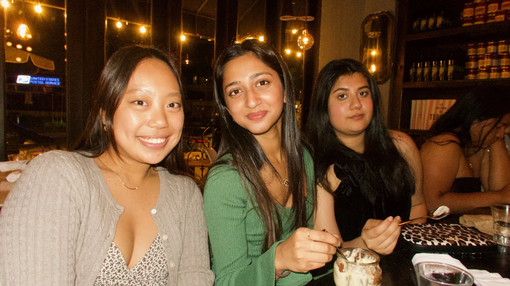

Applications open
8:00 AM — the application goes live.
recruitment
You don't need previous experience in venture, finance, or startups to apply. We're looking for women who ask good questions, take initiative, care about doing good work, and are excited to contribute alongside other people who are too.
fall 2026 schedule
We recruit twice a year, in the Fall and Winter quarters. Here's how Fall recruitment runs.
8:00 AM — the application goes live.
Come find our table and say hi.
6:00–7:00 PM — meet the board and hear what membership actually looks like.
Low-pressure conversations with current members. Bring questions, not a performance.
6:00–8:00 PM — come find us there too.
11:59 PM — final deadline.
A closer look at how you think and show up in a room.
The last step before decisions go out.
You'll hear from us either way.
6:00–7:00 PM — welcome to the chapter.
what it feels like
This is the emotional balance: students should understand that recruitment matters, but the chapter itself still feels welcoming.

show up prepared
leave with peopleapply
Open to women-identifying UCLA undergraduates of all majors and years. Applications open September 21 — link drops here once it's live.
faq
Keep this direct. Applicants should leave feeling welcomed and clear on expectations.
No. Curiosity and follow-through matter more than already knowing every term.
Both, intentionally. The point is to build real professional access through a warm member experience.
Open to women-identifying UCLA undergraduates of all majors and years — no previous experience in venture, finance, or startups needed.